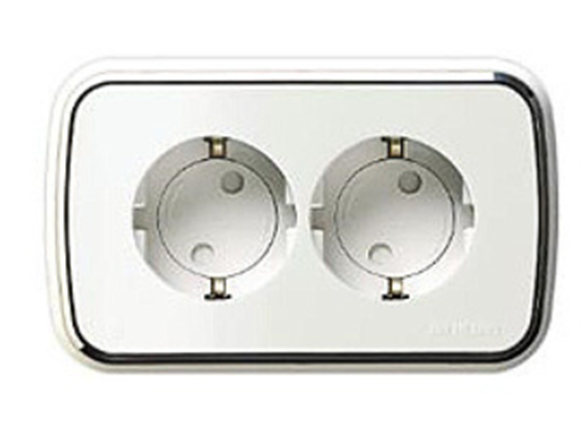

아이가 자신의 감정을 분노, 화 등 통제하기 어려운 상황
아이는 말로 자신의 의사를 제대로 표현하기가 어려운 시기이다. 조금만 화가 나도 막무가내로 울기, 물건을 집어던진다. 또한 바닥에 드러누워 소리를 크게 지르면서 발로 차고 손을 이리저리 휘두르는 행동을 나타낸다. 아이는 더욱 화를 내고 큰 소리로 울고 화 내기를 자주 한다. 3세 경우 제1반항기로 독립심과 자아 의식으로 스스로 자신의 감정을 통제하기 어렵다. 아이는 자신의 요구에 대한 언어 표현력이 부족하여 사소한 일에도 화를 자주 나타낸다. 심할 경우 울고불고 야단법석을 떠는 행동을 한다. 5세 정도가 되면 자기를 억제하는 힘이 생겨 남의 입장을 생각하여 통제를 할 수 있다. 화를 낼 때 파괴적인 행동을 동반한다면 위험할 가능성이 높으므로 특별한 관심을 가져야 한다.
위기 상황에서 부모는 담대하게 행동하기
1) 가정환경의 분노 표출
양육자가 다투거나 화를 내는 모습을 자주 보이면서 분노를 표출한 모습을 흡수하여 강화된다. 큰 소리를 자주 내는 양육자의 충격적인 모습은 아이에게 모델링이 되어간다. 화를 자주내는 경우 야단치기보다 화나는 감정에 공감을 한다. 무엇이 아이를 화나게 했는지 이해해야 한다. 아이에게 화내는 모습을 보이지 않도록 한다. 화가 날 때 어떻게 처리하는가, 어떻게 화를 내는가 등에 대한 바람직한 대안이나 방법을 가르쳐준다.
2) 감정조절의 자기통제력
아이가 화를 낼 때는 무시하고 화를 내지 않을 때 칭찬으로 강화해주도록 한다. 감정상황을 조절하여 상호작용을 긍정적으로 하는 경우에는 칭찬을 하면서 바람직한 행동을 일관되게 한다. 또래친구의 아픔, 미안함, 두려움 등에 공감할 수 있도록 한다. 아이가 공감적 이해를 받은 경우는 자신의 분노 감정을 자연스럽게 조절하고 또래친구를 배려하게 된다.
3) 건강한 에너지로 발산
아이의 화를 말로 나타내거나 다른 방법으로 자신의 요구를 나타내도록 가르져 준다. 소리를 치고 떠들면서 울음으로 화를 낼 때 가능한 관심을 주지 않고 무시를 한다. 아이에게 영양과 휴식 및 운동을 적절하게 하면 화가 풀리기도 한다. 아이의 화는 신체적 긴장을 발산시킬 놀이를 제공한다.
4) 생태학적 환경 고려
화를 내고 신경질을 부릴 때에는 내적인 면에, 혹은 외적인 면에 그 이유가 있다. 몸이 아프다든가, 주위 환경이 불안스럽다든가, 산만한 분위기 속에서는 그러므로 아이의 건강에 주의하고 피로하지 않도록 해 줄 것이며, 규칙적인 생활을 하게 하고, 조용한 환경을 만들어 안정감 및 휴식을 주도록 한다.
5) 자신감 있는 양육태도
아이의 부당한 요구를 들어주면 화내는 것이 습관화되므로 반드시 키켜야 한다는 행동 규칙을 정하여 긍정적인 행동을 형성시킨다. 화를 내거나 신경질을 부려서 자기의 뜻을 관철시키려는 아이에게 말로 한다든가, 다른 표현으로 나타내도록 가르쳐 준다. 아이가 지나치게 흥분할 경우 일정시간 격리하는 방법으로 다스린다. 만일 그 요구하는 바가 들어 주어서는 안 되는 경우에는 아무리 외치고 떠들고 울더라도 그대로 내버려 둘 필요가 있다.
6) 잘못된 습관을 올바르게
화, 분노란 감정들 중에서도 가장 부정적인 감정으로 또래관계를 망가뜨릴 수 있다. 아이의 작은 일에도 쉽게 반응하는 엄마의 감정이 쉽게 증폭되어 귀찮고 성가시다는 생각으로 아이가 하는 대로 내버려 두면 거침없이 하게 된다. 아이의 화를 말로 나타내거나 다른 방법으로 나타내도록 안내해야한다. 소리를 치고 떠들면서 울음으로 화를 나타내면 관심을 주지 않고 무시를 한다. 아이가 화를 조절하여 상호작용을 바람직한 행동으로 발휘하도록 한다.
2021.11.25 - [분류 전체보기] - 다른 아이를 깨무는 아이- 자신의 감정을 공격과 충동성 발휘
다른 아이를 깨무는 아이- 자신의 감정을 공격과 충동성 발휘
공격적인 아이, 감정조율이 미흡한 아이, 관심 받기 위한 행동 아이가 이빨로 깨무는 행동은 다른 아이에게 상처나 피해를 입히는 것이기에 부모나 교육기관에서는 근심거리가 될 수 밖에 없다.
think-sis.tistory.com